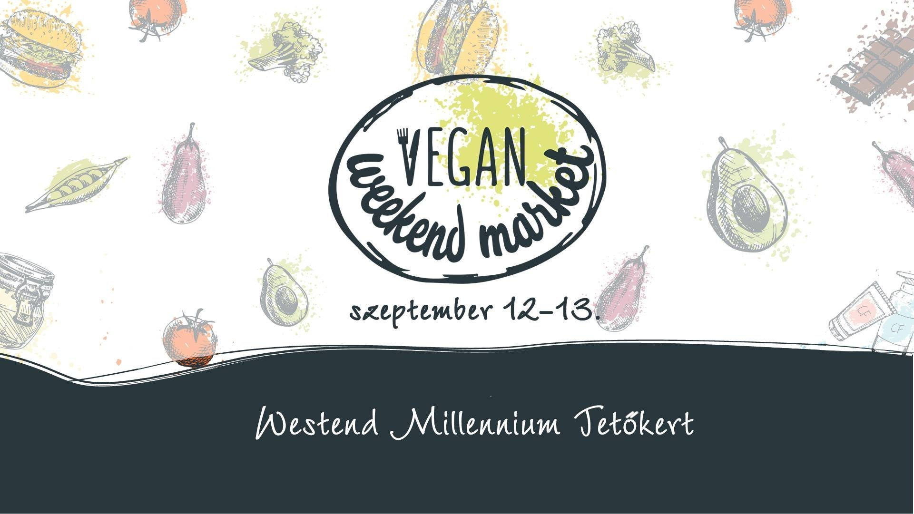
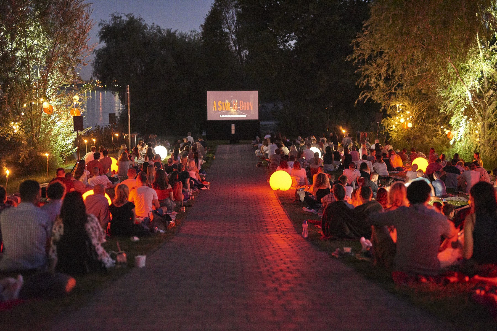
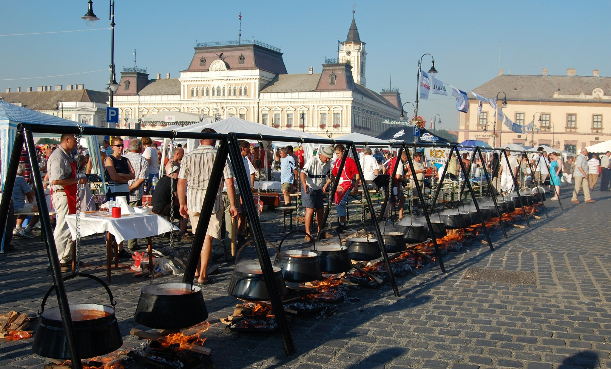
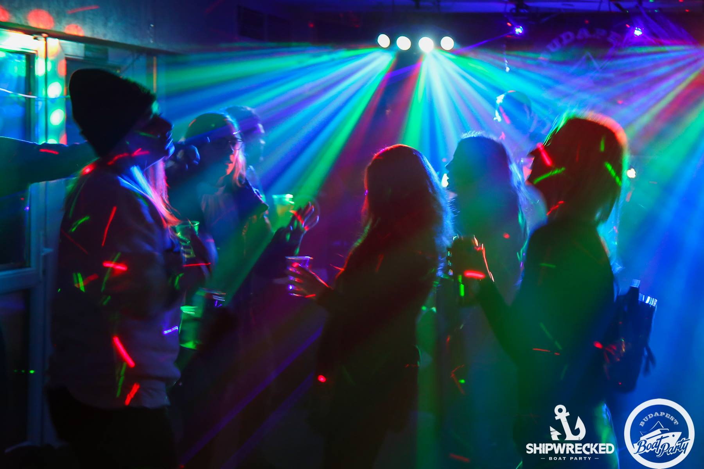
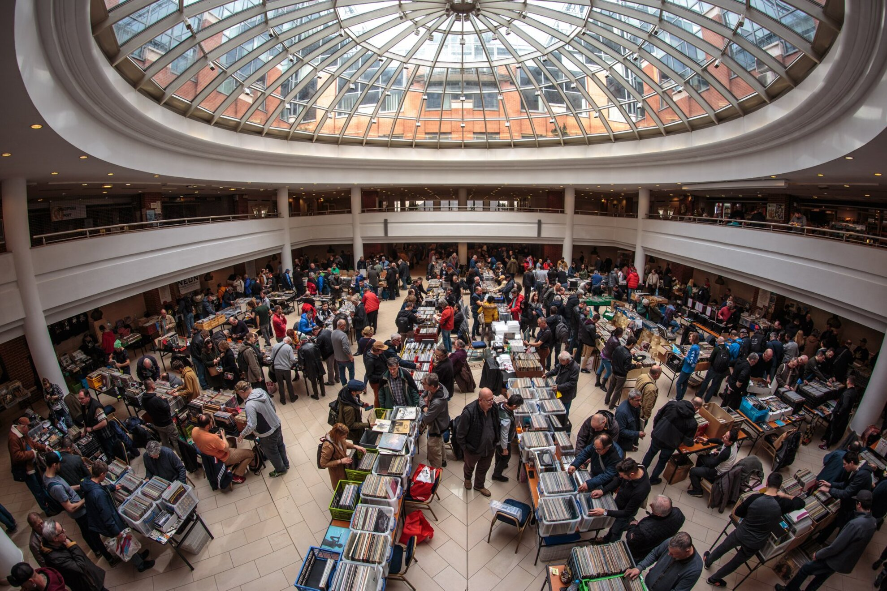
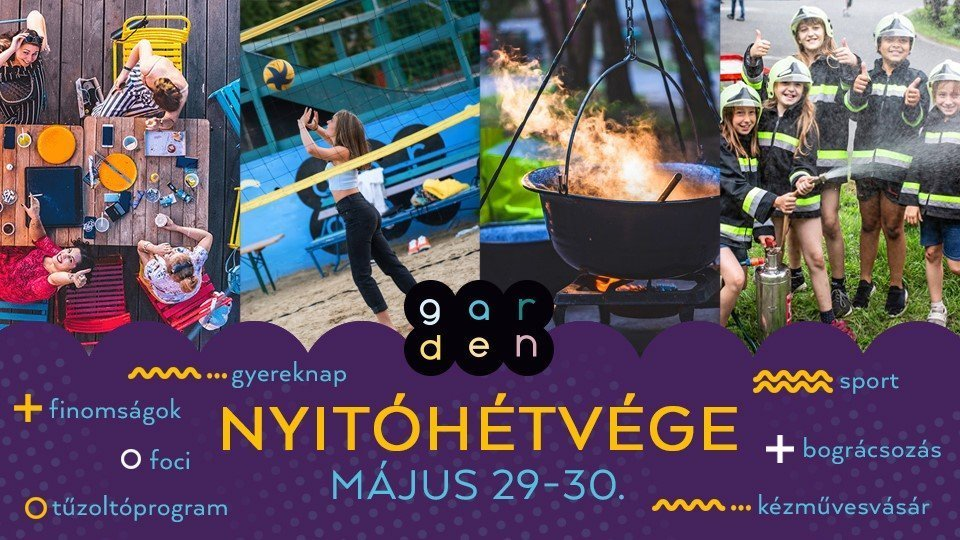
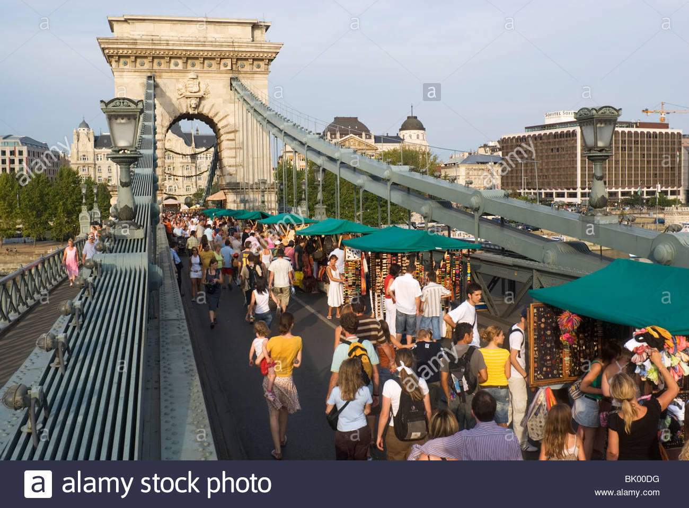

Budapešť, Maďarsko 19.06.2021 - 20.06.2021 VEGAN WEEKEND MARKET, the communal vegan market is waiting for you on 19-20th June, let's meet next to Allee shopping mall again! 🌱🎉💚 We are waiting for you, your friends and all those who would step into summer with a lack of social.
Budapešť, Maďarsko 26.06.2021 Phaxe in Wonderland - Our daytime party series continues, this time again smuggling something new and wonderful into the world of performers and venue.
Budapešť, Maďarsko 19.06.2021 - 20.06.2021 We bring the best fish dishes to Budapest. Giant cauldron, fish stew, fried fish, fishy street food in all quantities, seafood and many more delicacies await you.
Budapešť, Maďarsko 05.06.2021 In the last 1 month, we have filled the terrace of our beloved Zsófia ship week by week with fun, demanding music and of course the best audience in Budapest, ie With You! 🤩✨For 2 (!!) hours we will sail out in the sunset and then wait for the.
Budapešť, Maďarsko Date 12.06.2021 - 13.06.2021 The Kőrösy sétány will be full of dogs! 🐶 Between June 12-13 👗🐩 With InStyle, we’re looking for the most stylish dog-owner couple to show off on the red carpet on June 12th.
Budapešť, Maďarsko Date 04.06.2021 Hello to all dear organic house and deep house fanatics and “hello dreamers” who love the dreamy sound! Once again, we worship the best works of the genre all night long.
Budapešť, Maďarsko Date 15.06.2021 You’re already in full swing, but you have a lot of questions? Have you run into online workouts many times, but haven’t been motivated enough yet? Can't find a way out of the maze of diets? Did you suffer a sports injury and would you like to.
Budapešť, Maďarsko 13.06.2021 The largest Hungarian vinyl record fair! Although unfortunately the Vinyl records fair was not held in May, we can almost certainly meet again at the June Budapest Record Exchange! Everything about music, vinyl records, CDs, DVDs, t-shirts, posters
Budapešť, Maďarsko 04.06.2021 - 17.09.2021 Salsa & bachata party on and around Kopaszi gát in Cactus Juice Bar. The venue is 100% open air, with a ballet mat around the Cactus Juice bar where you can dance. The venue has limited capacity , so come early because it gets full soon.
Budapešť, Maďarsko 03.06.2021 - 17.07.2021 The FREE Budapest Historical Sight - Seeing Walking Tour is the best way to sightsee Budapest. The tour covers all the major historical sites and attractions and covers both the Buda and the Pest side of the city
